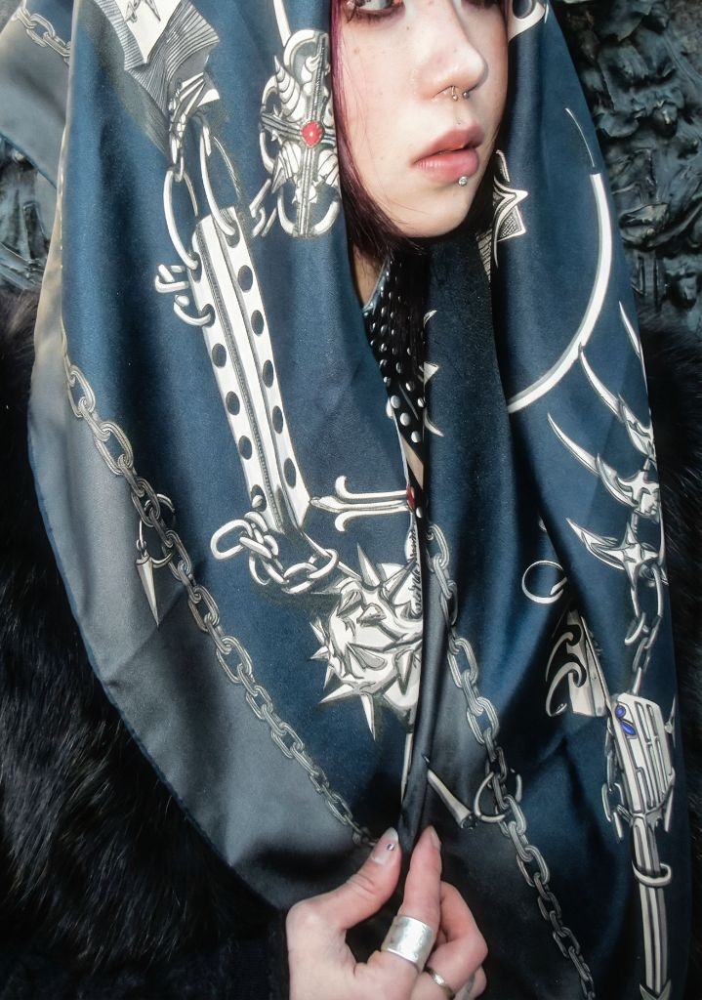

Featuring motifs of metal chains, insects, and leather, the handkerchiefs and kimono prints blend boldness with a touch of edginess.
A print design project for handkerchiefs and kimono-inspired textiles — blending boldness with a touch of edginess. The designs draw on the visual language of gothic and military aesthetics, creating a cool, dangerous atmosphere wrapped in fabric.